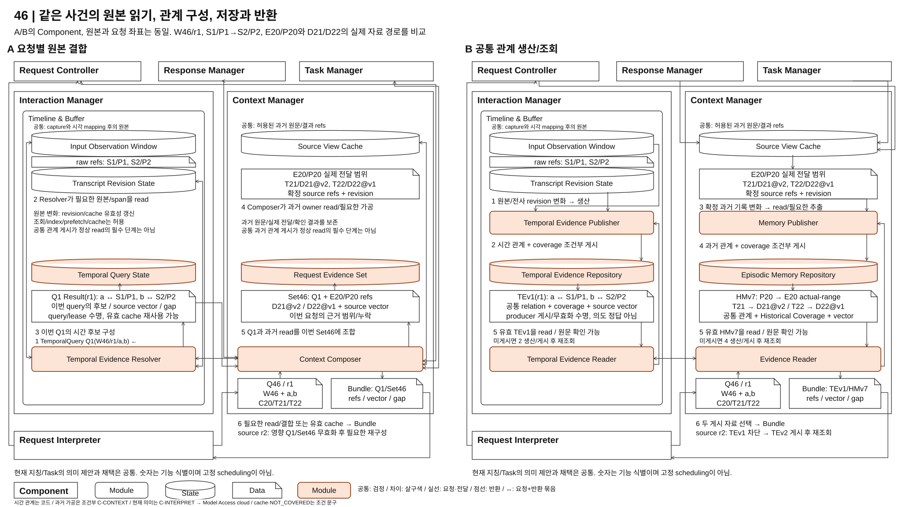

<!doctype html><html lang="ko"><meta charset="utf-8"><meta name="viewport" content="width=device-width,initial-scale=1"><title>46 구조 검토</title>
<style>body{margin:0;font:16px system-ui;background:#f5f5f5;color:#151515}header{position:sticky;top:0;background:#fff;padding:14px 22px;border-bottom:1px solid #bbb;z-index:1}button,a{margin-right:12px}button{padding:8px 12px;border:1px solid #aaa;border-radius:5px;background:white;cursor:pointer}button[aria-pressed=true]{background:#fce4d6;border-color:#9b502b}main{padding:20px;overflow:auto}img{display:block;width:100%;min-width:1000px;background:white}p{margin:8px 0}</style>
<header><strong>46: 요청별 구성과 공통 생산/조회</strong><p>A/B 미선정. 문서/그림 검토용이며 구현/성능 측정 결과가 아닙니다.</p>
<nav><button data-stem="dp46-background">문제와 같은 원본</button><button data-stem="choice46-structure" aria-pressed="true">MAIN 구조</button><button data-stem="choice46-timeline">정정 사건도</button><button data-stem="choice46-lifecycle">상태와 사용 경계</button><button id="zoom">원본 크기 / 폭 맞춤</button></nav>
<p><a href="../04-46-input-and-context-evidence.md">본문</a><a id="svg" href="choice46-structure.svg">SVG</a><a id="drawio" href="choice46-structure.drawio">편집 가능한 draw.io</a></p></header>
<main></main><script>
let full=false;const figure=document.getElementById('figure');document.querySelectorAll('[data-stem]').forEach(b=>b.onclick=()=>{document.querySelectorAll('[data-stem]').forEach(x=>x.setAttribute('aria-pressed',String(x===b)));figure.src=b.dataset.stem+'.svg';document.getElementById('svg').href=figure.src;document.getElementById('drawio').href=b.dataset.stem+'.drawio';});document.getElementById('zoom').onclick=()=>{full=!full;figure.style.width=full?'2560px':'100%';};
</script></html>
